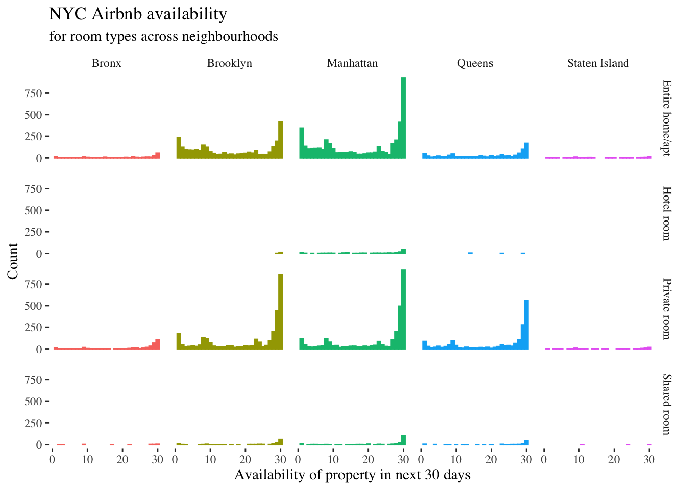

Lesson 5: Turning code into reproducible documents with Rmarkdown
Functions for Lesson 5
here, summarise, set_here, dr_here
Packages for Lesson 5
here, dplyr, readr,rmarkdown
Agenda
Create reproducible HTML, PDF, and Word documents from R using RMarkdown.
* Download the RMarkdown template (right click > Save As). Save this in the same folder as your coding club files. The file should have a .Rmd extension, e.g. Lesson5_rmd.Rmd.
* Open RStudio and run the following code to install the necessary packages:
packages <- c("pacman", "rmarkdown", "here")
install.packages(packages, dependencies = T)
lapply(packages, require, character.only = T)
Do First
Recreate the below plot using the larger NYC Airbnb dataset. Here’s the code to add the title and labels.
url <- "http://data.insideairbnb.com/united-states/ny/new-york-city/2019-06-02/data/listings.csv.gz"
nyc_full <- readr::read_csv(url) # reads in data
ttl <- "NYC Airbnb availability"
subttl <- "for room types across neighbourhoods"
xlab <- "Availability of property in next 30 days"
ylab <- "Count"
# append this to your ggplot function with a `+`
labs(title = ttl, subtitle = subttl, x = xlab, y = ylab)
Setting your working directory
Using here to set your working directory
require(here) # load the here package if not already
set_here() # set current working directory
dr_here() # print current working directory where .here is locatedExample 1
1. Create a folder in your local directory called ‘lookhere’.
2. Open a new file in TextEdit (Mac) or Notepad (Windows), type in something like " We found the here file! “, then save the file as “heretest.txt”.
require(readr)
# example 1
list.files() # print files in your current working dir. the 'heretest.txt' file is not here, but one folder below in the new 'lookhere' folder
here("lookhere", "heretest.txt") # using here to forage for the file
here("lookhere", "heretest.txt") %>% read_lines # print the contents in R
Example 2
1. Create another folder within the lookhere folder called lookheretoo
2. Create another .txt file called heretesttoo.txt and save it.
# example 2 create two folders
folder1 <- "lookhere"
folder2 <- "lookheretoo"
file <- "heretesttoo.txt"
# navigate to the /lookheretoo folder and open the heretesttoo file using 'here'
here(folder1, folder2, file) %>% read_lines
read_lines(here(folder1, folder2, file)) # non-tidy version
Why is here useful?
* You can step through sub folders by defining them individually as function inputs
* You can user define these subfolders as variables at the beginning of your R script and refer to them throughout your script without pasting, e.g. paste(folder1,folder2,sep="/").
Creating an R project (Rproj) file
Option 1: Create an RProject new directory:
* File > New Project
* Create New Project
* Choose a name for your RProj folder. Fill out Directory name: (make it machine-friendly, i.e. no spaces)
* Choose a place for the RProj to live. Browse
* Select Open in new session
Option 2: If you already have a folder just for Emory Coding Club:
* File > New Project
* Existing directory > Browse
* Select Open in new session
- Open the ‘Lesson5_rmd.Rmd’ file within this project and save it as ‘Lesson5_rmd.Rmd’.
- Open another .R file within this project and save it.
- Now repeat the above steps with a second Rproj file. Save this in another directory somewhere on your computer.
- Now check the working directory within both Rproj files using the
herepackage. What do you see?
Navigating the Rmarkdown interface
Have a look through each section of the raw .Rmd file to see what the code does. You’ll be using this template to create your own files, such as creating personal notes for future sessions in this coding club.

Exercises
- Knit an HTML document. Use the hotkey
Cmd/Ctrl + Shift + K
- Create a ‘EmoRy Coding Club notes’ document
- Create your own parameter in the yaml
- Create a code chunk that shows the code and output, but masks any warnings
- Create a code chunk with a plot of your own data or from the Airbnb data. Here’s the NYC Airbnb data:
# large Airbnb dataset (106 cols)
require(readr, dplyr)
url <- "http://data.insideairbnb.com/united-states/ny/new-york-city/2019-06-02/data/listings.csv.gz"
nyc_full <- read_csv(url) # reads in data
nyc_full %>% glimpse- Change the above figure dimensions in the knitted document
- Create a table with the title in bold, one of the columns set to right justified text, and one of the rows italicised
- Write an inline equation and an indented equation